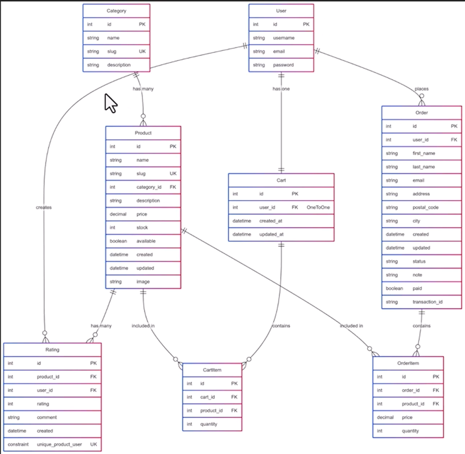

| Version | 1.0 |
| Date | September 16, 2026 |
| Prepared based on | System Entity-Relationship Diagram (ERD.png) |
This Software Requirements Specification (SRS) document describes the functional and non-functional requirements of the E-Commerce Web Application. The purpose of this document is to provide a clear and detailed description of the system's behavior, data structures, and constraints, derived from the system's Entity-Relationship Diagram (ERD), to guide the design, development, and testing of the application.
The E-Commerce Web Application enables customers to browse product categories and products, manage a personal shopping cart, place orders, and rate/review purchased products. It also supports administrative management of categories and products. The system covers the following core modules: User Management, Category Management, Product Management, Shopping Cart, Order Management, and Product Rating & Review.
| Term | Description |
|---|---|
| SRS | Software Requirements Specification |
| ERD | Entity-Relationship Diagram |
| PK | Primary Key |
| FK | Foreign Key |
| UK | Unique Key / Unique Constraint |
| CRUD | Create, Read, Update, Delete |
| User | A registered customer of the system |
| Admin | A privileged user who manages catalog data |
System Entity-Relationship Diagram — ERD.png (project reference document, see Appendix A).
The remainder of this document is organized as follows: Section 2 gives an overall description of the product and its users; Section 3 lists detailed functional requirements grouped by module; Section 4 describes non-functional requirements; Section 5 documents the data model derived from the ERD; Section 6 summarizes key use cases; and Appendix A presents the full ERD.
The E-Commerce Web Application is a standalone, self-contained web-based system consisting of a customer-facing storefront and back-end data management for products, orders, and users. It follows a relational data model, as depicted in the system ERD, comprising eight core entities: User, Category, Product, Cart, CartItem, Order, OrderItem, and Rating.
| User Class | Description |
|---|---|
| Customer (User) | A registered user who browses products, manages a cart, places orders, and rates products. |
| Administrator | A user with elevated privileges responsible for managing categories, products, and order fulfillment. |
| Guest | An unauthenticated visitor who can browse categories and products but must register/log in to purchase. |
The system operates as a web application accessible via standard web browsers, backed by a relational database that implements the entities and relationships defined in Section 5.
product_id and user_id
(a user may rate a given product only once).Product.price, OrderItem.price) must be stored using a
decimal data type to avoid rounding errors.It is assumed that a single default currency is used throughout the system, that products belong to exactly
one category, and that payment processing/transaction verification is handled by an external payment gateway
referenced via the Order.transaction_id field.
| ID | Requirement |
|---|---|
| FR-1.1 | The system shall allow a new user to register with a unique username, email, and password. |
| FR-1.2 | The system shall allow a registered user to log in using their username/email and password. |
| FR-1.3 | The system shall securely store user passwords (e.g., hashed, never in plain text). |
| FR-1.4 | The system shall automatically associate exactly one shopping cart with each registered user. |
| ID | Requirement |
|---|---|
| FR-2.1 | The system shall allow an administrator to create, update, and delete product categories. |
| FR-2.2 | Each category shall have a unique name, a unique slug, and an optional description. |
| FR-2.3 | The system shall allow users to browse products filtered by category. |
| ID | Requirement |
|---|---|
| FR-3.1 | The system shall allow an administrator to create, update, and delete products. |
| FR-3.2 | Each product shall belong to exactly one category and include name, unique slug, description, price, stock quantity, availability flag, and image. |
| FR-3.3 | The system shall automatically record the creation and last-updated timestamps of each product. |
| FR-3.4 | The system shall prevent a product from being purchased when its stock is zero or its availability flag is false. |
| FR-3.5 | The system shall allow users to view detailed information and ratings for a given product. |
| ID | Requirement |
|---|---|
| FR-4.1 | The system shall provide each logged-in user with exactly one persistent cart. |
| FR-4.2 | The system shall allow a user to add a product to their cart as a cart item with a specified quantity. |
| FR-4.3 | The system shall allow a user to update the quantity of, or remove, a cart item. |
| FR-4.4 | The system shall record and update the cart's created_at and updated_at timestamps. |
| ID | Requirement |
|---|---|
| FR-5.1 | The system shall allow a user to place an order, converting the current cart items into order items. |
| FR-5.2 | Each order shall capture recipient details: first name, last name, email, address, postal code, and city. |
| FR-5.3 | Each order shall have a status (e.g., pending, processing, shipped, delivered, cancelled) and an optional note. |
| FR-5.4 | The system shall track whether an order has been paid and store an associated payment transaction ID. |
| FR-5.5 | Each order item shall record the product, quantity, and the price of the product at the time of purchase. |
| FR-5.6 | The system shall allow a user to view their order history and the current status of each order. |
| ID | Requirement |
|---|---|
| FR-6.1 | The system shall allow a user to submit a numeric rating and an optional comment for a product. |
| FR-6.2 | The system shall restrict each user to at most one rating per product (enforced by a unique product-user constraint). |
| FR-6.3 | The system shall record the timestamp when a rating is created. |
| FR-6.4 | The system shall display the ratings and comments associated with a product on its detail page. |
The system shall load product listing and product detail pages within 2 seconds under normal load conditions.
The user interface shall be intuitive and require no special training for a typical online shopper to browse products, manage a cart, and place an order.
The system shall ensure that order and payment data is never lost once an order has been confirmed, and shall target at least 99% uptime.
The data model shall support growth in the number of categories, products, users, and orders without requiring structural changes to the schema.
The system's data access layer shall reflect the entity relationships defined in Section 5, allowing future features to be added with minimal impact on existing modules.
This section documents the core entities and their attributes as derived from the system ERD (see Appendix A).
| Field | Type | Key |
|---|---|---|
| id | int | PK |
| username | string | |
| string | ||
| password | string |
| Field | Type | Key |
|---|---|---|
| id | int | PK |
| name | string | |
| slug | string | UK |
| description | string |
| Field | Type | Key |
|---|---|---|
| id | int | PK |
| name | string | |
| slug | string | UK |
| category_id | int | FK → Category.id |
| description | string | |
| price | decimal | |
| stock | int | |
| available | boolean | |
| created | datetime | |
| updated | datetime | |
| image | string |
| Field | Type | Key |
|---|---|---|
| id | int | PK |
| user_id | int | FK → User.id (One-to-One) |
| created_at | datetime | |
| updated_at | datetime |
| Field | Type | Key |
|---|---|---|
| id | int | PK |
| cart_id | int | FK → Cart.id |
| product_id | int | FK → Product.id |
| quantity | int |
| Field | Type | Key |
|---|---|---|
| id | int | PK |
| user_id | int | FK → User.id |
| first_name | string | |
| last_name | string | |
| string | ||
| address | string | |
| postal_code | string | |
| city | string | |
| created | datetime | |
| updated | datetime | |
| status | string | |
| note | string | |
| paid | boolean | |
| transaction_id | string |
| Field | Type | Key |
|---|---|---|
| id | int | PK |
| order_id | int | FK → Order.id |
| product_id | int | FK → Product.id |
| price | decimal | |
| quantity | int |
| Field | Type | Key |
|---|---|---|
| id | int | PK |
| product_id | int | FK → Product.id |
| user_id | int | FK → User.id |
| rating | int | |
| comment | string | |
| created | datetime | |
| unique_product_user | constraint | UK (product_id, user_id) |
| Relationship | Cardinality |
|---|---|
| Category → Product | One category has many products |
| User → Cart | One user has one cart (1:1) |
| User → Order | One user places many orders |
| Cart → CartItem | One cart contains many cart items |
| Product → CartItem | One product is included in many cart items |
| Order → OrderItem | One order contains many order items |
| Product → OrderItem | One product is included in many order items |
| Product → Rating | One product has many ratings |
| User → Rating | One user gives many ratings (at most one per product) |
Actor: Guest / Customer. Description: The user selects a category and views the list of available products belonging to it. Precondition: At least one category and product exist. Postcondition: A filtered product list is displayed.
Actor: Customer. Description: The user selects a product and quantity, and adds it to their cart. Precondition: User is logged in; product is available and in stock. Postcondition: A new CartItem is created or an existing one's quantity is updated.
Actor: Customer. Description: The user reviews cart items, provides shipping details, and confirms the order. Precondition: Cart contains at least one item. Postcondition: An Order and its corresponding OrderItems are created; the cart is cleared.
Actor: Customer. Description: The user submits a rating (and optional comment) for a product they have purchased. Precondition: User has not already rated this product. Postcondition: A new Rating record is created and displayed on the product page.
Actor: Administrator. Description: The administrator creates, edits, or removes a product, including its category assignment, price, and stock. Postcondition: The Product catalog is updated.
